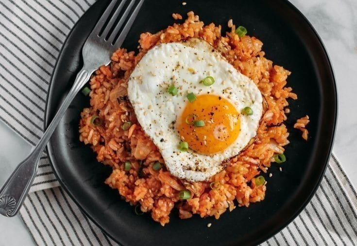

Kang Wildan adalah pemilik dari Kedai Nasi Goreng Pusdikum. Kedai Nasi Goreng Pusdikum merupakan sebuah kedai yang tidak hanya menjual Nasi Goreng tetapi banyak menu lainnya seperti, Mie Goreng/Rebus, Kwetiaw Goreng/Rebus, dan Capcay Goreng/Rebus.